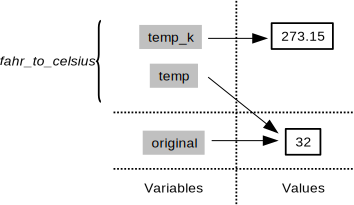

Programming with Python
The Call Stack
Learning Objectives
- Explain what a call stack is, and trace changes to the call stack as functions are called.
Let's take a closer look at what happens when we call fahr_to_celsius(32.0). To make things clearer, we'll start by putting the initial value 32.0 in a variable and store the final result in one as well:
original = 32.0
final = fahr_to_celsius(original)The diagram below shows what memory looks like after the first line has been executed:

When we call fahr_to_celsius, Python doesn't create the variable temp right away. Instead, it creates something called a stack frame to keep track of the variables defined by fahr_to_kelvin. Initially, this stack frame only holds the value of temp:

When we call fahr_to_kelvin inside fahr_to_celsius, Python creates another stack frame to hold fahr_to_kelvin's variables:

It does this because there are now two variables in play called temp: the parameter to fahr_to_celsius, and the parameter to fahr_to_kelvin. Having two variables with the same name in the same part of the program would be ambiguous, so Python (and every other modern programming language) creates a new stack frame for each function call to keep that function's variables separate from those defined by other functions.
When the call to fahr_to_kelvin returns a value, Python throws away fahr_to_kelvin's stack frame and creates a new variable in the stack frame for fahr_to_celsius to hold the temperature in Kelvin:

It then calls kelvin_to_celsius, which means it creates a stack frame to hold that function's variables:

Once again, Python throws away that stack frame when kelvin_to_celsius is done and creates the variable result in the stack frame for fahr_to_celsius:

Finally, when fahr_to_celsius is done, Python throws away its stack frame and puts its result in a new variable called final that lives in the stack frame we started with:

This final stack frame is always there; it holds the variables we defined outside the functions in our code. What it doesn't hold is the variables that were in the various stack frames. If we try to get the value of temp after our functions have finished running, Python tells us that there's no such thing:
print 'final value of temp after all function calls:', temp---------------------------------------------------------------------------
NameError Traceback (most recent call last)
<ipython-input-12-ffd9b4dbd5f1> in <module>()
----> 1 print 'final value of temp after all function calls:', temp
NameError: name 'temp' is not definedfinal value of temp after all function calls:Why go to all this trouble? Well, here's a function called span that calculates the difference between the mininum and maximum values in an array:
import numpy
def span(a):
diff = a.max() - a.min()
return diff
data = numpy.loadtxt(fname='inflammation-01.csv', delimiter=',')
print 'span of data', span(data) span of data 20.0Notice that span assigns a value to a variable called diff. We might very well use a variable with the same name to hold data:
diff = numpy.loadtxt(fname='inflammation-01.csv', delimiter=',')
print 'span of data:', span(diff)span of data: 20.0We don't expect diff to have the value 20.0 after this function call, so the name diff cannot refer to the same thing inside span as it does in the main body of our program. And yes, we could probably choose a different name than diff in our main program in this case, but we don't want to have to read every line of NumPy to see what variable names its functions use before calling any of those functions, just in case they change the values of our variables.
The big idea here is encapsulation, and it's the key to writing correct, comprehensible programs. A function's job is to turn several operations into one so that we can think about a single function call instead of a dozen or a hundred statements each time we want to do something. That only works if functions don't interfere with each other; if they do, we have to pay attention to the details once again, which quickly overloads our short-term memory.
FIXME
We previously wrote functions called fence and outer. Draw a diagram showing how the call stack changes when we run the following:
print outer(fence('carbon', '+'))